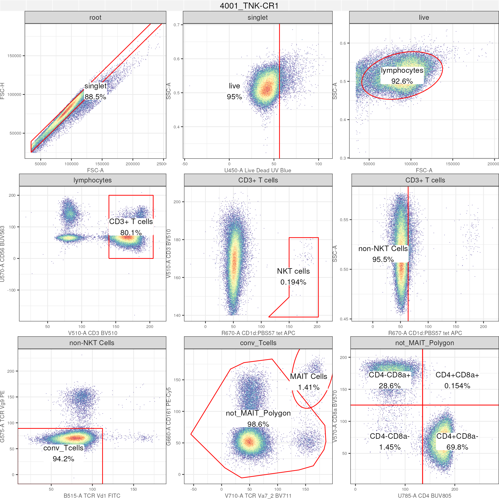
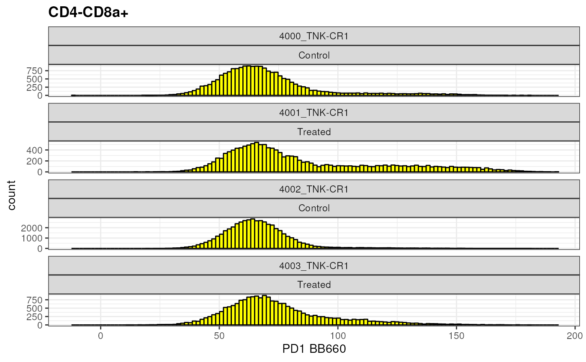
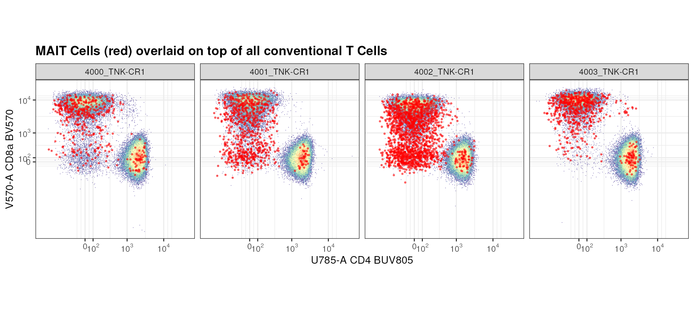

We have spent a bit of time going over import, manupulation,
compensation, and transformation of flow cytometry data. Importantly, we
have used visualizations to highlight the importance of various steps.
Here, we dedicate some time to visualization of flow cytometry data
using ggcyto library from the cytoverse
For those who have experience working with ggplot, the
approach is going to be similar. As such, ggcyto provides a
easy to use yet powerful approach to visualize flow cytometry data.
It is also important to note that ggcyto works with each
of flowFrame, flowSet, cytoframe,
cytoset, GatingSet, and
GatingHierarchy and allows the user to utilize various
attributes of each of the object. For instance,
metadata within pData slot in
flowSet/cytoset and GatingSet to
prepare insightful visualizations, rapidly.
[THE GATINGSET BEING USED AS AN EXAMPLE SEEMS TO HAVE LOST INFORMATION REGARDING TRANSFORMATION. WILL PLOTclass]
## Loading required package: ggplot2## Loading required package: ncdfFlow## Loading required package: BH## Loading required package: flowWorkspace## As part of improvements to flowWorkspace, some behavior of
## GatingSet objects has changed. For details, please read the section
## titled "The cytoframe and cytoset classes" in the package vignette:
##
## vignette("flowWorkspace-Introduction", "flowWorkspace")
# set theme
theme_set(theme_bw())
library(CytoverseBioc2023)## Loading required package: Biobase## Loading required package: BiocGenerics##
## Attaching package: 'BiocGenerics'## The following object is masked from 'package:flowCore':
##
## normalize## The following objects are masked from 'package:stats':
##
## IQR, mad, sd, var, xtabs## The following objects are masked from 'package:base':
##
## anyDuplicated, aperm, append, as.data.frame, basename, cbind,
## colnames, dirname, do.call, duplicated, eval, evalq, Filter, Find,
## get, grep, grepl, intersect, is.unsorted, lapply, Map, mapply,
## match, mget, order, paste, pmax, pmax.int, pmin, pmin.int,
## Position, rank, rbind, Reduce, rownames, sapply, setdiff, sort,
## table, tapply, union, unique, unsplit, which.max, which.min## Welcome to Bioconductor
##
## Vignettes contain introductory material; view with
## 'browseVignettes()'. To cite Bioconductor, see
## 'citation("Biobase")', and for packages 'citation("pkgname")'.## Loading required package: openCyto## Warning: replacing previous import 'flowViz::contour' by 'graphics::contour'
## when loading 'flowStats'## Warning: did not converge in 100 iterationsHit the ground running using autoplot
The autoplot method is a convenient for rapid generation
of plots with minimal effort.
- Bivariate plot
# flowFrame: bivariate plot
autoplot(ff,
x = "CD4", # markername in human readable format
y = "R730-A", # markername as colname of flowFrame
bins = 256)
- Density plot
# flowFrame: density plot
autoplot(ff,
x = "CD4")+ # y not results in a density plot
geom_density(fill = "red") # utilize ggplot geom
- Bivariate plot of the entire
GatingHeirarchy
# GatingSet: full GatingHierachy
autoplot(gs[[2]], # single GatingHierachy will plot the entire gating path
bins = 256)+ # bins control resolution
ggcyto_par_set(limits = "data")+ # axis limits based on data
geom_stats(type = c("gate_name","percent")) # add name of gate and statistic
- Specific node within a
GatingSet
# GatingSet: single gate
autoplot(gs,
gate = "CD3+ T cells", # plot a specific gate for all samples
bins = 256)+
ggcyto_par_set(limits = "data")+
axis_x_inverse_trans()+ # inverse transform the axes
axis_y_inverse_trans()Note: When working with GatingSet or
GatingHierarchy, the autoplot method does not
take x and y parameters. Rather either
a **gate* can be specified or if left unspecified, the entire
GatingHierachy is plotted.
Granular control using ggcyto
The ggcyto method takes us 1 step deeper into granular
control when visualizing cytometry data. Using this method, users can
now start to make visualizations not afforded by
autoplot.
- Bivariate plot for data within a specific node using markers other than those defined for a node
ggcyto(gs,
subset = "singlet", # extract data at specific node
aes(x = "CD8a", y = "CD4"))+ # any marker combination
geom_hex(bins = 256)+
facet_wrap(~name)
The marker combination “CD8a vs CD4” is used to at the node
gs_get_pop_paths(gs)[8] to define CD4+ vs CD8+ T cells.
Unlike with autoplot, ggcyto method allows us
to look at the data from the point of subset. In the above
example, subset = "singlet.
- Adding a gate and stats layer that doesn’t exist in the
subsetnode
During reporting, it is possible that users would want to see
# get a gate
cd4_gate <- gs_pop_get_gate(gs,"CD4+CD8a-")
ggcyto(gs,
subset = "singlet", # extract data at specific node
aes(x = "CD8a", y = "CD4"))+ # any marker combination
geom_hex(bins = 256)+
facet_wrap(~name)+
geom_gate(cd4_gate)+ # plot gate
geom_stats(type = "percent")+ # on the fly calculation of the "gate" event
axis_x_inverse_trans()+
axis_y_inverse_trans()Note: This population has not been defined in the
GatingSet! Yet, we are able to connect multiple components
to generate an informative report quickly. We now know that CD4+ cells
(not sure at this point if they are CD3+ T cells) are ~47% of total
singlet population that we had defined.
In a similar manner, we can use a newly defined gate to interrogate
the GatingSet.
new_gate <- flowCore::rectangleGate(
list("V570-A" = c(150,210),
"V510-A" = c(140,210)),
filterId = "CD3+CD8a+ Cells"
)
ggcyto(gs,
subset = "singlet", # extract data at specific node
aes(x = "CD3", y = "CD8a"))+ # any marker combination
geom_hex(bins = 256)+
facet_grid(mock_treatment~name)+ # facet according to treatment
geom_gate(new_gate)+
ggcyto_par_set(limits = "data")+
geom_stats(type = "percent")+
axis_x_inverse_trans()+
axis_y_inverse_trans()
Above we created a gate, did not apply it to a GatingSet
directly, but are now leveraging the ggcyto library to
rapidly generate insight regarding CD8a+ CD3+ T cells from the
singlet node. Moreover, we have leveraged the metadata from
pData to generate additional insight regarding the
data.
Expression using histograms and densities
A common way to report or view specific population data is to ask whether there is a change in expression levels (fluoresence intensity) across samples or groups.
Let’s take a look at PD1 expression in CD8+ T Cells
cd8 <- as.ggplot(ggcyto(gs,
subset = "CD4-CD8a+",
aes(x = "PD1"))+
geom_histogram(bins = 125, fill = "yellow", color = "black")+
facet_wrap(name~mock_treatment,ncol = 1, scales = "free_y")+
ggcyto::labs_cyto(labels = "marker")) # labeling only marker
cd8
What if you would like to compare 2 different populations side by side?
cd4 <- as.ggplot(ggcyto(gs,
subset = "CD4+CD8a-",
aes(x = "PD1"))+
geom_histogram(bins = 125, fill = "blue", colour = "black")+
facet_wrap(name~mock_treatment,ncol = 1, scales = "free_y")+
ggcyto::labs_cyto(labels = "marker")) # labeling only marker
gridExtra::grid.arrange(cd4,cd8, ncol =2 )Or, if you would like to compare population on top of each other?
overlay <-ggcyto(gs,
subset = "CD4+CD8a-",
aes(x = "PD1"))+
geom_density(fill = "red", alpha = 0.3)+
geom_overlay(
data = gs_pop_get_data(gs,"MAIT Cells"), # extracting information regarding a different population
fill = "black", alpha = 0.5)+
axis_x_inverse_trans()+
labs(title = "Comparing expression of PD1 in 2 distinct T cells: CD8a+ (red) and CD161+ Va7_2+ MAIT Cells (black)")+
facet_wrap(mock_treatment~name, nrow = 1)+
theme(aspect.ratio = 1)
overlaySeems like MAIT Cells tend to have higher PD1 expression than CD8+ T Cells! This may be an interesting observation that is worth following up on.
Backgating and overlays
There are instances when you may want to visualize a gated population
(children/grandchildren/siblings) together with the parent. This is the
idea behind backgating. We have already seen met this approach above
using geom_overlay where density of 1 node was project on
top of density of a different unrelated node.
Below, we go through another example where we ask the question: what is the general expression level of CD4 and CD8a on MAIT cells compared to all CD3+ T cells?
mait_expression <- ggcyto(gs,
subset = "CD3+ T cells",
aes(x = "CD4", y = "CD8a"))+
geom_hex(bins = 256)+
geom_overlay(data =
gs_pop_get_data(gs, "MAIT Cells"),
size = 0.5, colour = "red", alpha = 0.5)+
axis_x_inverse_trans()+
axis_y_inverse_trans()+
facet_wrap(~name, nrow = 1)+
labs(title = "MAIT Cells (red) overlaid on top of all conventional T Cells")+
theme(aspect.ratio = 1)
mait_expression 
Seems like there are a lot of MAIT Cells that are CD8a+ or negative for both CD8a and CD4 compared to CD4+.